детская мода 2023
Детская мода — это целый сегмент легкой промышленности, фото с подиумов доказывают данный факт. Наблюдается интересная тенденция, современные дети рано увлекаются стильной одеждой. Особое внимание они обращают на весну-лето.
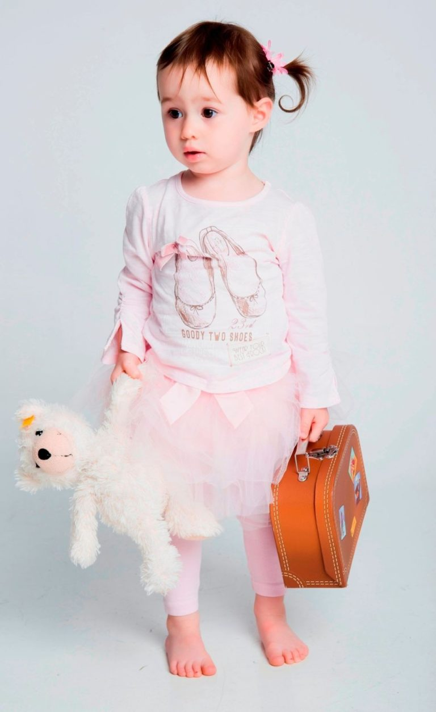 Покрой одежды тоже не имеет существенных различий. Девочки с удовольствием будут носить облегающие платья, платья-рубашки, туники, блузки, платья с басками.
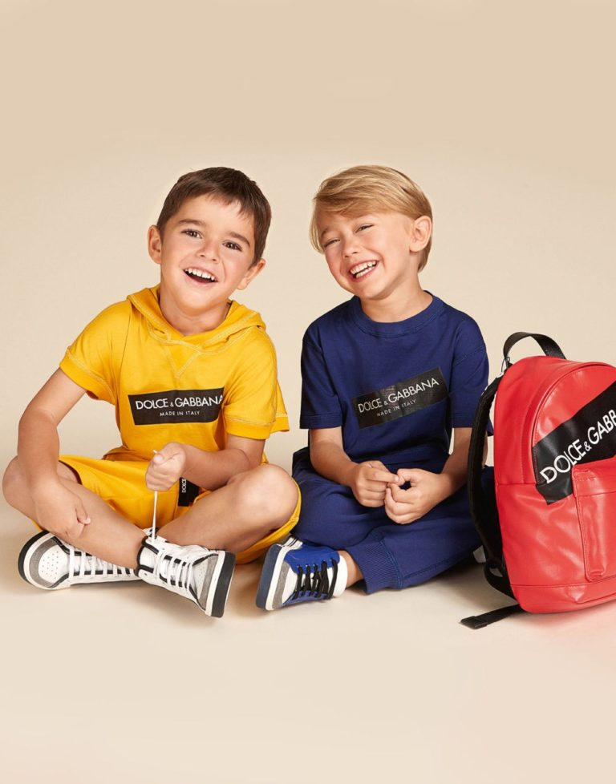 Однотонные футболки выглядят весьма презентабельно, однако это выбор старших школьников. Мальчики младшего возраста, дошкольники, с особым удовольствием носят модели с яркими логотипами, рисунками.
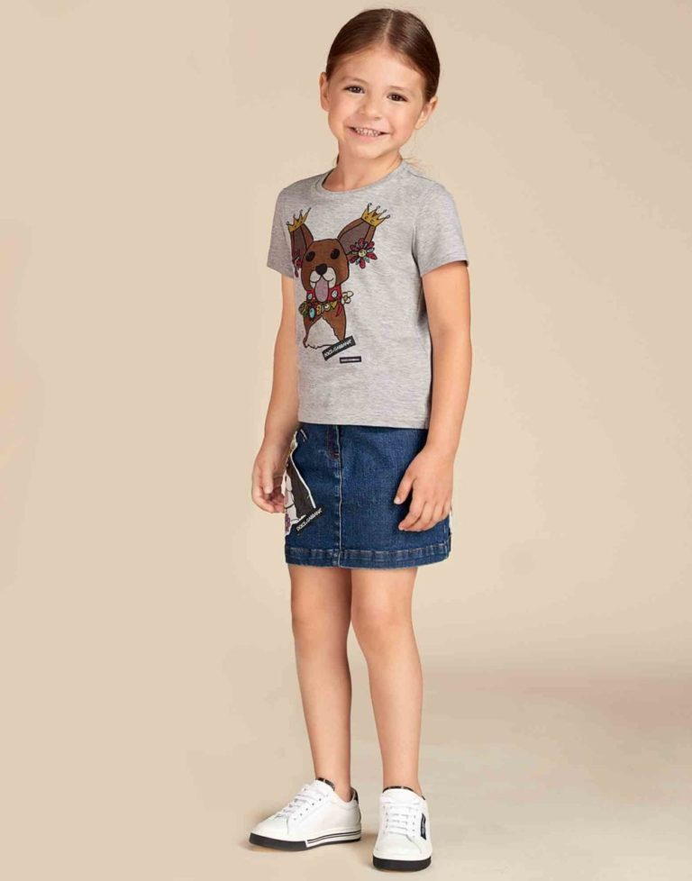 Среди модных тенденций можно заметить сложные пейзажные зарисовки с присутствием милых, трогательных животных. Используются крупные изображения котиков, кроликов, щенков. Для девочек постарше декор иной – акварельные цветы, архитектурные шедевры на белом или пастельном фоне.
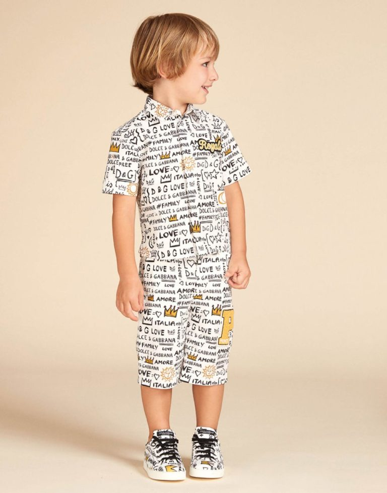 Мода иногда консервативна – основные тенденции рубашечного кроя остаются без изменений. В тренде простота и удобство, использование натуральных хлопковых тканей.
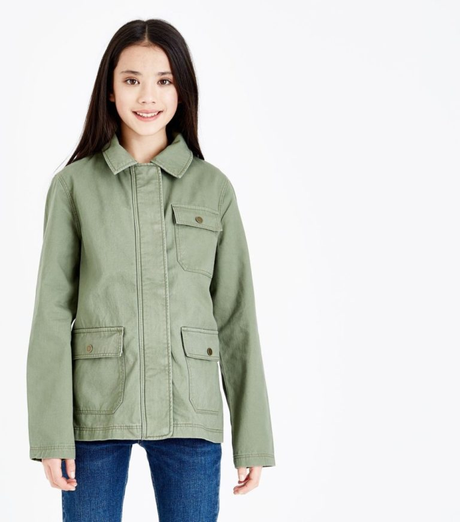 Для любых видов верхней одежды в 2023 году используются сочные и пастельные цвета. Прямое, расклешенное пальто из натуральной шерсти декорируют большими пуговицами. В качестве украшения может выступать пушистый воротник, крупные карманы из меха.
 Детские костюмы – удивительная одежда, мигом превращающая мальчика в мужчину.
Детские костюмы – удивительная одежда, мигом превращающая мальчика в мужчину.
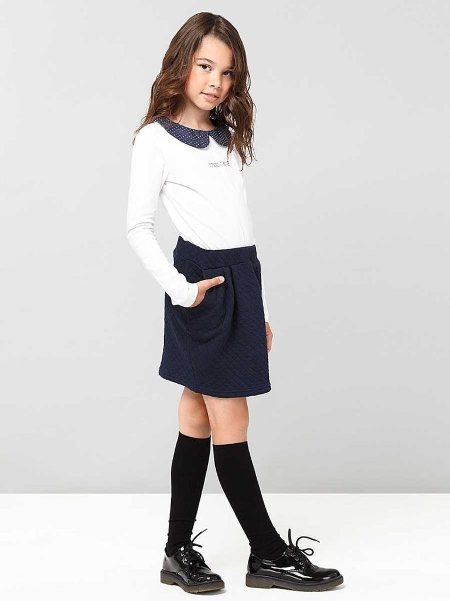 Школьный дресс код в этом году вряд ли будет менее суров к маленьким модницам. Форма, белый фартук, белые банты. Однако и в таких стесненных обстоятельствах девочки могут проявить индивидуальность.
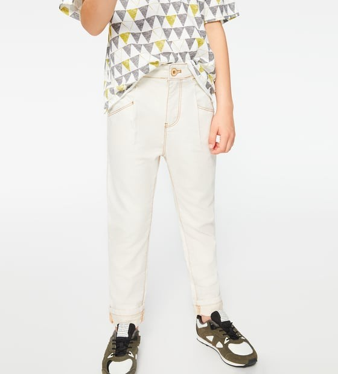 Рассматривая фото с модных показов, нетрудно заметить особенности детских джинсов.
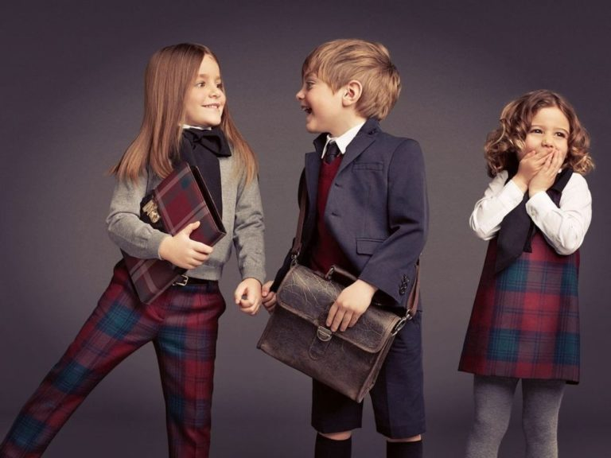
Платья
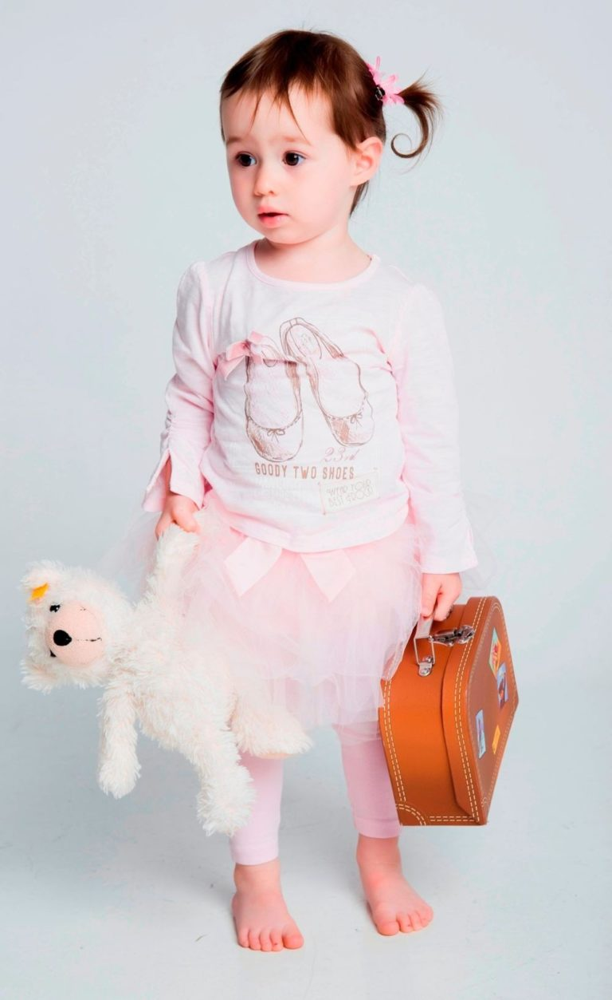 Покрой одежды тоже не имеет существенных различий. Девочки с удовольствием будут носить облегающие платья, платья-рубашки, туники, блузки, платья с басками.
Футболки
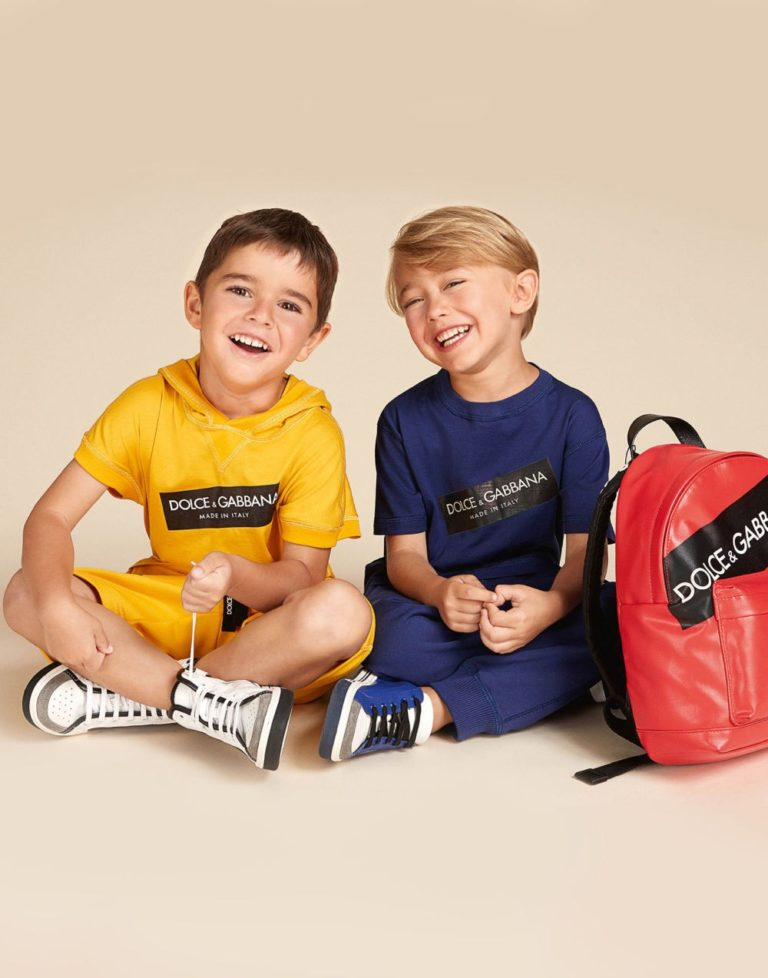 Однотонные футболки выглядят весьма презентабельно, однако это выбор старших школьников. Мальчики младшего возраста, дошкольники, с особым удовольствием носят модели с яркими логотипами, рисунками.
Лонгсливы
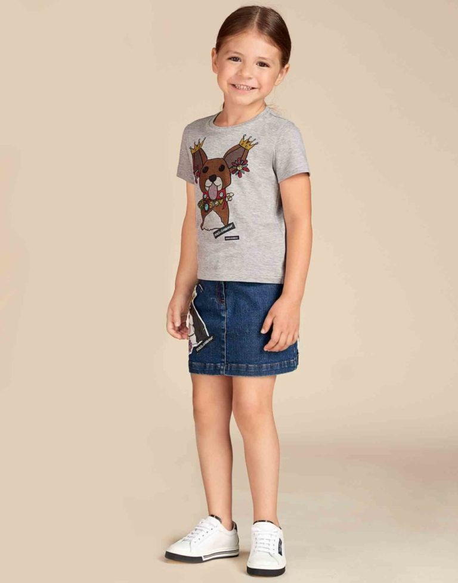 Среди модных тенденций можно заметить сложные пейзажные зарисовки с присутствием милых, трогательных животных. Используются крупные изображения котиков, кроликов, щенков. Для девочек постарше декор иной – акварельные цветы, архитектурные шедевры на белом или пастельном фоне.
Рубашки
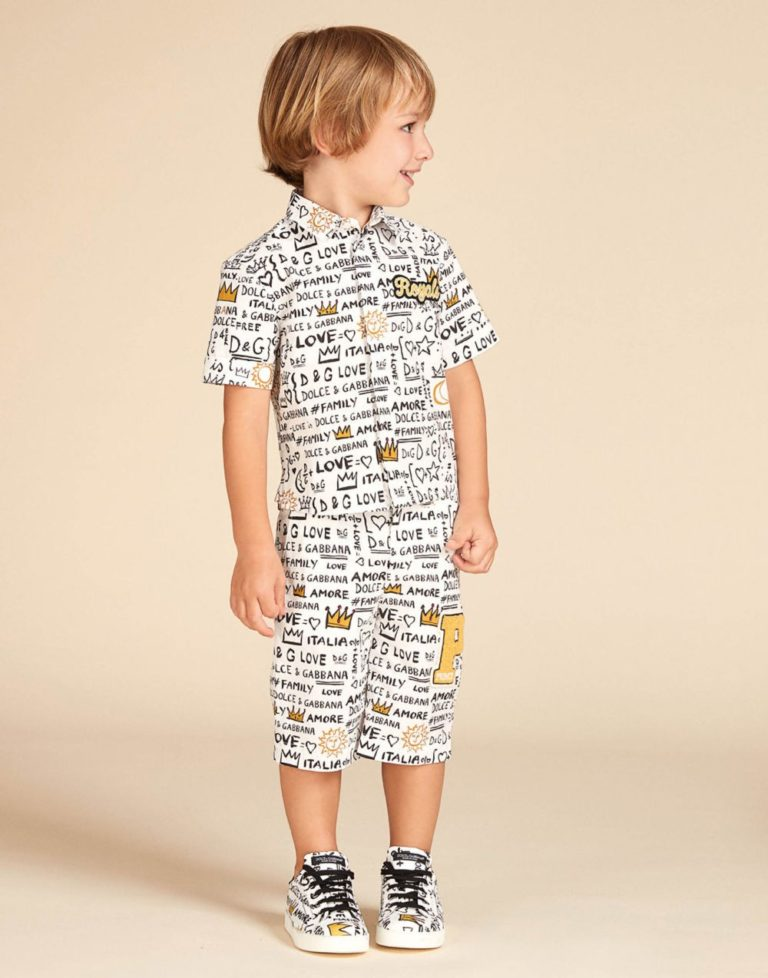 Мода иногда консервативна – основные тенденции рубашечного кроя остаются без изменений. В тренде простота и удобство, использование натуральных хлопковых тканей.
Верхняя одежда
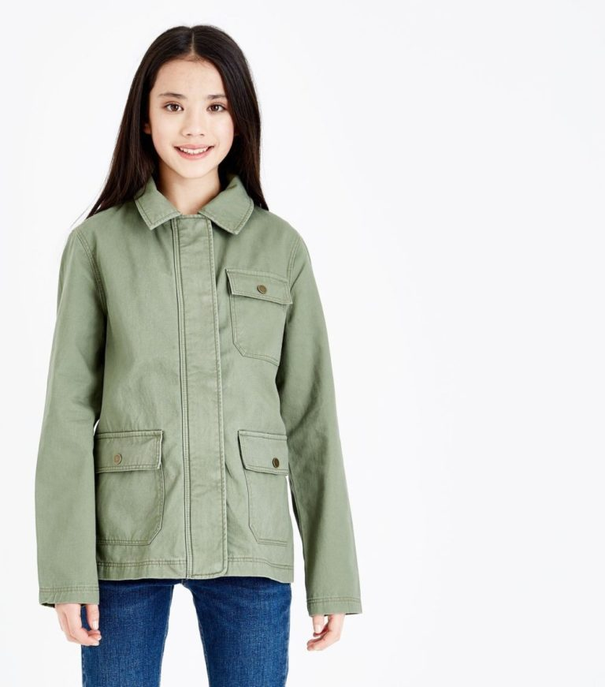 Для любых видов верхней одежды в 2023 году используются сочные и пастельные цвета. Прямое, расклешенное пальто из натуральной шерсти декорируют большими пуговицами. В качестве украшения может выступать пушистый воротник, крупные карманы из меха.
Костюмы
Детские костюмы – удивительная одежда, мигом превращающая мальчика в мужчину.
Последний звонок
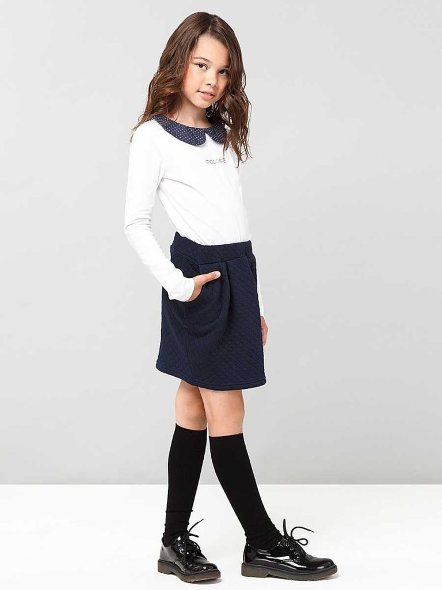 Школьный дресс код в этом году вряд ли будет менее суров к маленьким модницам. Форма, белый фартук, белые банты. Однако и в таких стесненных обстоятельствах девочки могут проявить индивидуальность.
Джинсы
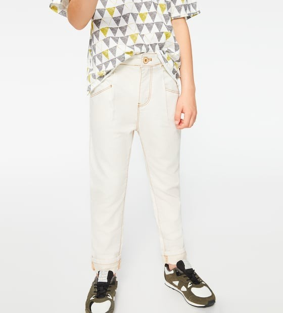 Рассматривая фото с модных показов, нетрудно заметить особенности детских джинсов.
Взрослые» цвета, пастельные оттенки
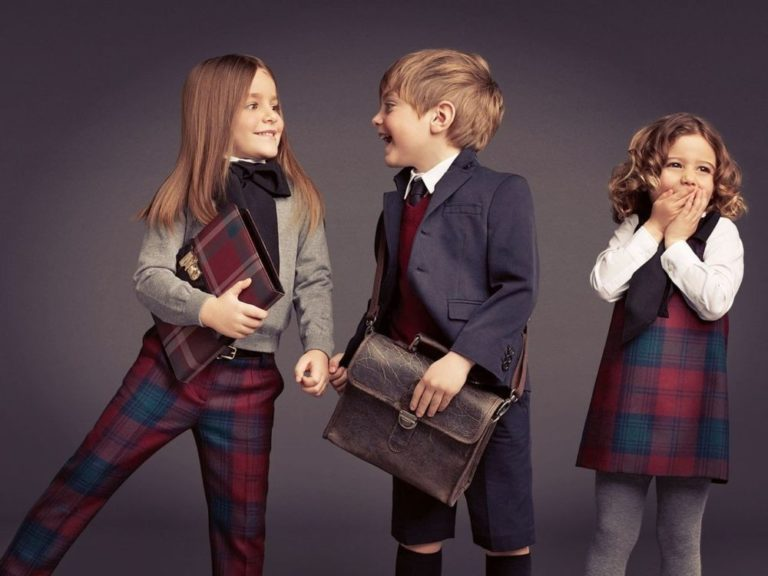